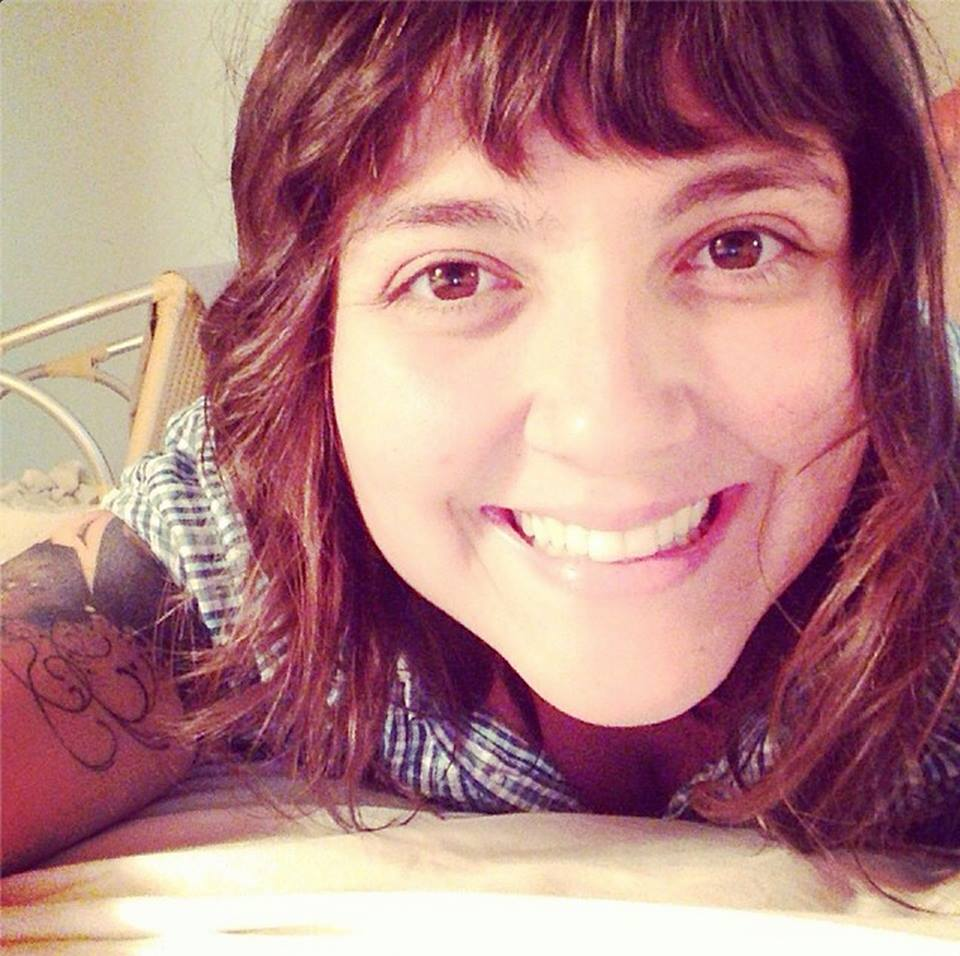

Sobre
O QA Night é um evento criado pelo grupo Teste de Software-PE, com o objetivo de compartilhar e adquirir conhecimentos e experiências.
Os encontros são mensais e o local de cada evento varia de acordo com a disponibilidade dos nossos atuais parceiros. Para estimular a participação da comunidade, manter e melhorar o evento, queremos sempre conquistar novas parcerias que compartilhem os mesmos objetivos: disseminar e adquirir conhecimentos e experiências com a comunidade de testes de software.
Você tem interesse em contribuir com esta comunidade? Gostaria de ajudar a organizar um evento, seja trazendo novos parceiros, querendo falar sobre algum assunto ou simplesmente ajudar na divulgação? Entre para fazer parte do grupo de voluntários no google group.
Localização
Av. Gov. Agamenon Magalhães, 4779 - Ilha do Leite. Recife, PE
Palestrantes
-

19h15 Experiência do usuário: estratégia essencial para a qualidade dos projetos
Tassia Spinelli tassiaspinelli@gmail.com
Tássia é Experience Designer na Thoughtworks Recife. Ela ama entender as necessidades dos usuários e como elas se conectam com serviços e negócios. Fazer pesquisa com usuários, entender seus pontos de dor e a partir disso construir experiências significativas são coisas que fazem seu dia divertido e especial.
Agenda
| Horário | Apresentação | Descrição |
|---|---|---|
| 19h00 | Check-in | - |
| 19h15 | Experiência do usuário: estratégia essencial para a qualidade dos projetos ThoughtWorks | Nesse encontro iremos conversar sobre conceitos de Experiência do Usuário, Usabilidade e Lean UX sob a ótica do analista de qualidade. Abordaremos técnicas rápidas de Pesquisa com Usuários, Design Thinking e Análise Heurística para facilitar o dia a dia dos QA's e a vida dos usuários finais. |
| 20h00 | Discussão sobre UX e testes | Discussão aberta sobre testes e UX |
| 21h00 | Encerramento | - |
Próximos Eventos
Esse é um evento da comunidade para a comunidade, ou seja, para que o conhecimento seja passado adiante, é preciso que pessoas da comunidade estejam dispostas a falarem sobre suas experiências e áreas de expertise.
Caso tenha interesse em falar sobre algum assunto/tópico, favor preencher esse formulário.